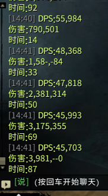

剑矛猎龙45k 90灌 优化M大佬的

利刃狂舞黑取6点黑
提升了1k多 再怎么优化也提升不了了，有大佬看看还能优化吗，比如利刃狂舞在正义之矛冷却1秒后按，然后接正义之矛，1秒内还能按个技能，
正义之剑，利刃狂舞，正义之矛|利刃狂舞=1=正义之矛，正义之矛=利刃狂舞，光照符印，日光奔袭，闪耀圆转，利刃狂舞黑=太阳风暴，决心符印，武器4黑=愤怒回旋，信仰之跃，束缚之刃，闪耀圆转=1=武器3黑=矛切武器，巨龙之咽，正义之剑，勇气之盾，信仰之跃=1=武器3黑=剑切武器，普攻||
正义之剑,x,601|利刃狂舞,r,441|正义之矛,F1,558|光照符印,5,440|日光奔袭,2,350|闪耀圆转,3,800|利刃狂舞黑|太阳风暴,4,550|决心符印,4,320|武器4黑|愤怒回旋,2,1629|信仰之跃,3,780|束缚之刃,5,479|武器3黑|矛切武器,`,150,4,380,2,1710|巨龙之咽,c,441|勇气之盾,F3,280|剑切武器,`,150,3,700|普攻,1,10
[&DQEuFSo6GzkmDwAA/gAAAIoSAABIAQAAtRIAAAAAAAAAAAAAAAAAAAAAAAACMgAJAQA=]
评论列表（19）
牛逼👍
大佬，这个取色顺序是不是不能打乱，必须按这个排序取色
不用，全取上就好
这个厉害了
锤5，除魔漩涡，双月，契灵切恶魔，锤2|苦行F2，拥抱黑暗，驱除附魔，驱除附魔=1=幻术师f2，除魔漩涡，双月，锤5，锤3，锤2，矛5，矛2，矛4，矛2=2=武器2黑=切武器，锤2=1=武器2黑=切武器，姿态cd=契灵切恶魔，姿态cd=恶魔切契灵，普攻|宇宙f3|
锤5,5,750|除魔漩涡,e,500|双月,r,950|契灵切恶魔,F1,120,r,450,q,500,!1,450|锤2,2,800|苦行F2,!1,680|拥抱黑暗,r,440|驱除附魔,q,450|幻术师f2,!1,450|锤3,3,960|矛5,5,590|矛2,2,520|矛4,4,750|武器2黑|切武器,`,120,2,300|姿态cd|恶魔切契灵,F1,150,r,500|普攻,1,10|宇宙f3,!2,1
修改了一下 补全了一些模糊的技能设置 带了30的灌注 打了46K
发错了 这个是症状契灵的 锤斧/长矛
这个武器3黑，武器4黑，是怎么取色的去大剑的还是大剑长矛都取
只看坐标，哪个武器都一样
为什么正义之矛总是会放第二段呢？
F1延迟调高点，不然按下后图标没消失会导致又识别一次，会继续按一次。
是开场按了第一段，放了其他技能再放第二段的，有时候也会连按
矛切武器和剑切武器是怎么取色啊
取切武器那个白色方向箭头
有实物扳手没灌注只能打37k结算，差的有点多啊..
又试了几轮，0灌结算41K不到
可以自己优化一下延迟 看那个键按了没打出来
没有打出来是需要增加延迟还是减少呢
这个厉害，大佬牛皮
相比较 提升了 整2K 感谢大佬分享